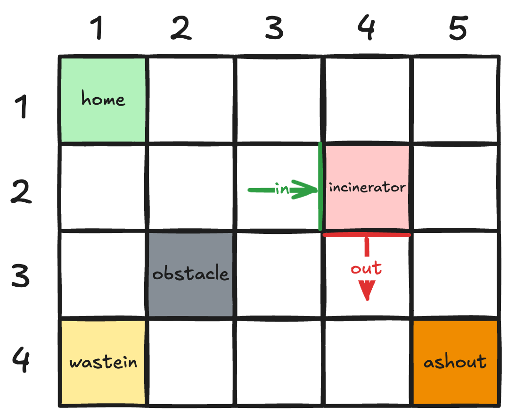
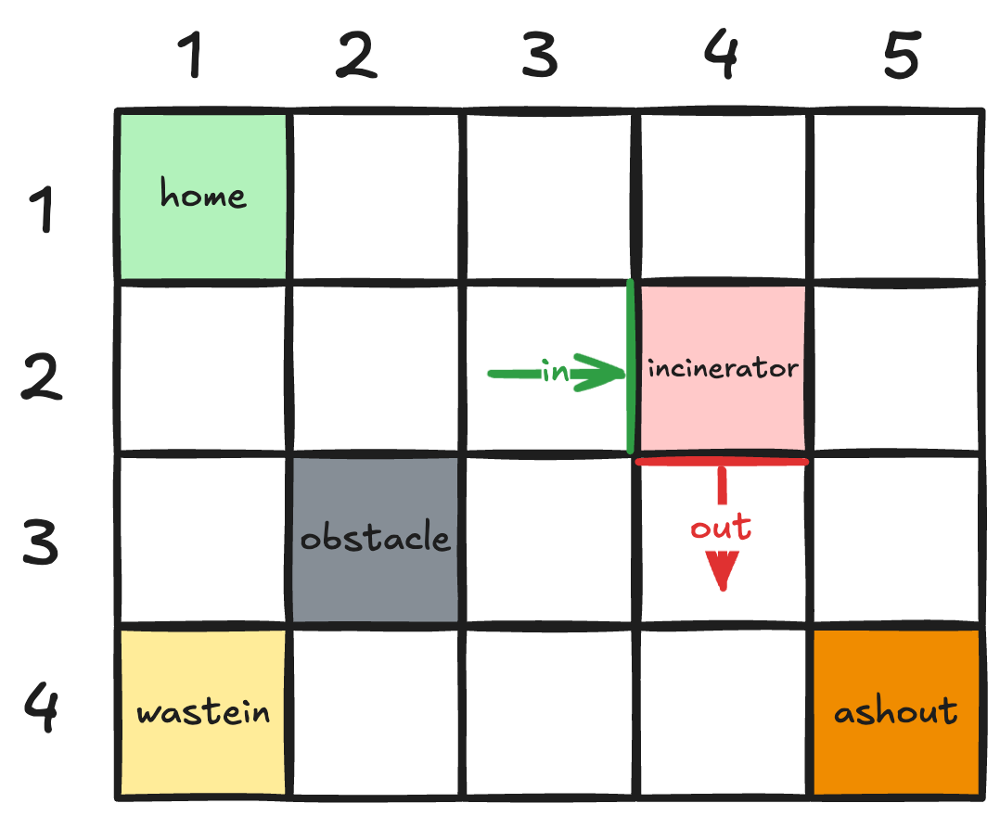
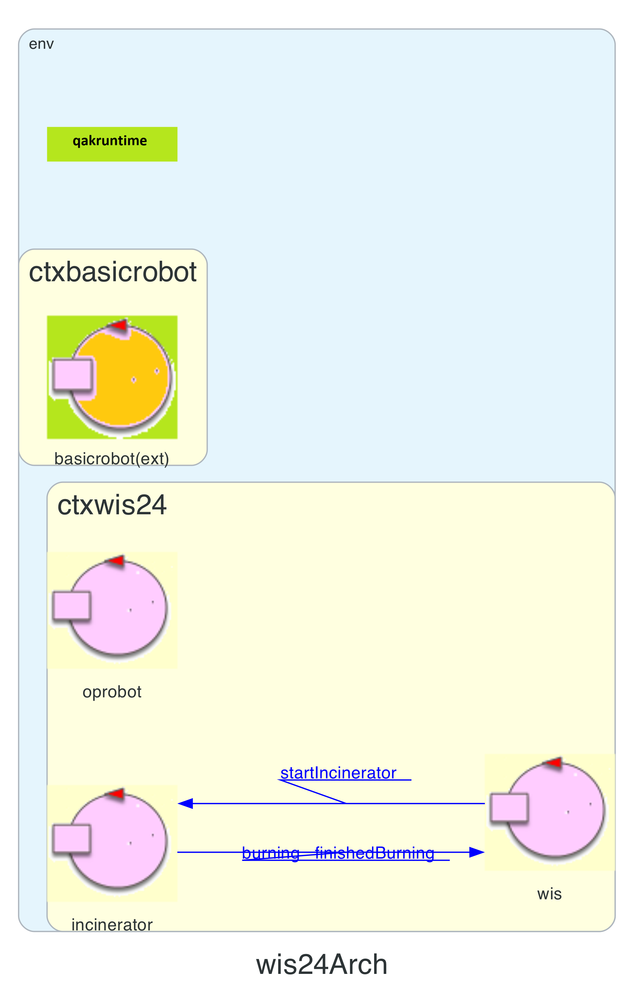
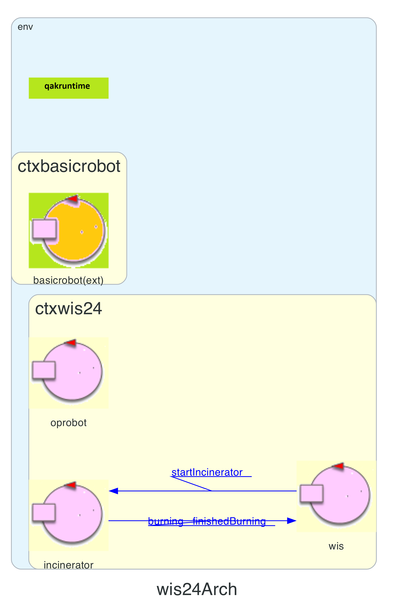

TEMA FINALE 2024 SPRINT0
Introduction
Questo documento contiene lo sprint0 del progetto per il tema finale del
corso.
Requisiti
I requisiti del sistema da creare possono essere trovati in
TemaFinale24.
Analisi dei requisiti
Analizzando i requisiti del problema possiamo dire che:
Il servizio WasteIncineratorService non trova una facile corrispondenza
in Java, quindi non posso esprimerlo come un oggetto. Per ovviare al problema, la nostra software house
ha sviluppato un DSL (Domain Specific Language) capace di utilizzare un termine più adeguato per esprimere
quello che il committente intende.
Il sistema, per essere modellato, necessita del termine di attore, ovvero un componente software dotato di un comportamento autonomo, capace di inviare, ricevere e gestire messaggi in un contesto distribuito. Si veda QakActors24 per maggiori informazioni, soprattutto per conoscere meglio cosa può fare e che interazioni può avere un attore.
Gli attori non hanno memoria condivisa e interagiscono tra di loro attraverso scambi di messaggi, che possono essere:
Il sistema, per essere modellato, necessita del termine di attore, ovvero un componente software dotato di un comportamento autonomo, capace di inviare, ricevere e gestire messaggi in un contesto distribuito. Si veda QakActors24 per maggiori informazioni, soprattutto per conoscere meglio cosa può fare e che interazioni può avere un attore.
Gli attori non hanno memoria condivisa e interagiscono tra di loro attraverso scambi di messaggi, che possono essere:
- dispatch: un messaggio inviato a un preciso destinatario senza attesa di una risposta (anche detto fire-and-forget).
- request: un messaggio inviato a un preciso destinatario aspettandosi da parte di questi una reply logicamente correlata alla richiesta (azione bloccante).
- event: un messaggio inviato a chiunque sia in grado di elaborarlo.
La service area è rappresentabile attraverso una matrice di X righe e Y colonne:
La singola cella avrà dimensione pari a quella del robot, prendiamo come riferimento quindi il DDR Robot fornito dal committente.
 All'esterno della service area sono presenti due container, il WasteStorage e l'AshStorage, e un MonitoringDevice.
class ServiceArea {
public int X, Y;
};
Forniamo una rappresentazione della service area in modo da definire gli elementi appertenenti ad essa.
La singola cella avrà dimensione pari a quella del robot, prendiamo come riferimento quindi il DDR Robot fornito dal committente.
 All'esterno della service area sono presenti due container, il WasteStorage e l'AshStorage, e un MonitoringDevice.
{kind=link}
Il WasteStorage container possiede una
bilancia come weighing device, che riporta il peso dei vari Roll
Packets (RP) depositati al suo interno. Il container è considerato vuoto
quando il valore della bilancia è approssimativamente zero. Ogni RP ha
un peso di circa 50kg, modellato come costante dell'attore.
Il container possiede una porta di ingresso WASTEIN all'interno della service area, la rappresenteremo quindi con una cella della matrice (prendendo d'esempio la figura in alto, ipotizziamo la cella in posizione (4,1)).
Il container possiede una porta di ingresso WASTEIN all'interno della service area, la rappresenteremo quindi con una cella della matrice (prendendo d'esempio la figura in alto, ipotizziamo la cella in posizione (4,1)).
L'AshStorage container può contenere al massimo le ceneri di 3-4 RP. Il
container possiede una porta di ingresso ASHOUT all'interno della service
area, la rappresenteremo quindi con una cella della matrice (prendendo d'esempio la figura in
alto, ipotizziamo la cella in posizione (4,5)).
Il MonitoringDevice è composto da un
Sonar e da un Led, posti su un RaspberryPi.
Il Sonar misura il livello delle ceneri nell'AshStorage container. DLIMIT indica il valore limite al di sotto del quale l'AshStorage container è considerato pieno.
Il Led è usato come warning device e segnala lo stato dell'Inceneritore e dell'AshStorage.
Il Sonar e il Led sono dispositivi fisici per i quali il committente fornisce software di supporto nell'utilizzo (RaspBasicCode, RaspApplCode24 ). Come per l'OpRobot con il DDR robot, è possibile definire questi due componenti come un attore posto in un contesto esterno al sistema, che utilizza i dispositivi fisici associati. La distanza DLIMIT sarà quindi una variabile dell'attore, intera e positiva.
Ci riserveremo in futuro di discutere l'esatta relazione tra MonitoringDevice, Sonar e Led.
Il Sonar misura il livello delle ceneri nell'AshStorage container. DLIMIT indica il valore limite al di sotto del quale l'AshStorage container è considerato pieno.
Il Led è usato come warning device e segnala lo stato dell'Inceneritore e dell'AshStorage.
Il Sonar e il Led sono dispositivi fisici per i quali il committente fornisce software di supporto nell'utilizzo (RaspBasicCode, RaspApplCode24 ). Come per l'OpRobot con il DDR robot, è possibile definire questi due componenti come un attore posto in un contesto esterno al sistema, che utilizza i dispositivi fisici associati. La distanza DLIMIT sarà quindi una variabile dell'attore, intera e positiva.
Ci riserveremo in futuro di discutere l'esatta relazione tra MonitoringDevice, Sonar e Led.
All'interno della service area è presente un
Inceneritore che occuperà una cella della matrice (prendendo d'esempio la
figura in alto, ipotizziamo la cella in posizione (2,4)), che può bruciare un RP alla volta in BTIME secondi, una variabile dell'attore intera e positiva. Sono presenti
due porte, rappresentate come celle
della matrice adiacenti all'Incinerator, BURNIN e
BURNOUT, che permettono rispettivamente
l'ingresso del RP e l'uscita delle ceneri dall'Inceneritore.
Un DDR robot è un robot che possiede due ruote motrici sullo
stesso asse e una terza ruota condotta (non motrice). Il committente
fornisce un servizio con cui è possibile interfacciarsi col robot che
sia fisico o virtuale (si veda
BasicRobot24 e
VirtualRobot per ulteriori
informazioni). Il servizio è realizzato ad attori ed ha la seguente
architettura:
 Attraverso messaggi è possibile ingaggiare il robot e farlo muovere
nell'area o effettuare piani di mosse.
Attraverso messaggi è possibile ingaggiare il robot e farlo muovere
nell'area o effettuare piani di mosse.
Attraverso messaggi è possibile ingaggiare il robot e farlo muovere
nell'area o effettuare piani di mosse.
L'OpRobot è un componente proattivo del
sistema che interagisce con il robot tramite l'interfaccia
basicrobot24, ed è pertinente modellarlo come un actor. La
HOME è anch'essa una cella della
matrice rappresentante la service area (prendendo d'esempio la figura in alto, ipotizziamo la
cella in posizione (1,1)).
L'OpRobot ha un comportamento specifico in risposta a determinate condizioni. Non è possibile un'immediata formalizzazione e quindi sarà necessario analizzare questa azione nell'analisi del problema, in quanto si devono gestire le problematiche del far muovere il robot e farlo andare nelle determinate aree.
L'OpRobot ha un comportamento specifico in risposta a determinate condizioni. Non è possibile un'immediata formalizzazione e quindi sarà necessario analizzare questa azione nell'analisi del problema, in quanto si devono gestire le problematiche del far muovere il robot e farlo andare nelle determinate aree.
Due agenti esterni si occupano di depositare nuovi RP nel
WasteStorage container e di prelevare le
ceneri dall'AshStorage container. I requisiti
non forniscono dettagli che ne permettono un'immediata formalizzazione.
La ServiceStatusGUI è un componente del
sistema che permette di visualizzare informazioni, quali lo stato del
WasteStorage, dell'AshStorage, dell'Incinerator e dell'OpRobot. È quindi
opportuno modellarlo (almeno inizialmente), come un attore che si relaziona al WIS. Verrà formalizzata nei successivi Sprint.
Analisi delle User Stories
"1. The OpRobot is somewhere in the service area (initially in the
HOME location).
2. If the WasteStorage container is not empty, and AshStorage container is not full, (i.e. the Led is not blinking ) and the Incinerator is not burning, the OpRobot moves to the WASTEIN port and gets a RP from the WasteStorage container. Otherwise, if returns to HOME, if not already here."
2. If the WasteStorage container is not empty, and AshStorage container is not full, (i.e. the Led is not blinking ) and the Incinerator is not burning, the OpRobot moves to the WASTEIN port and gets a RP from the WasteStorage container. Otherwise, if returns to HOME, if not already here."
All'inizio, l'OpRobot si trova in una posizione iniziale denominata HOME, situata nella Service
Area.
Successivamente, verrà fatto un controllo sullo stato del WasteStorage, dell'AshStorage e dell'Incinerator. Viene richiesto che il WasteStorage non sia vuoto, che l'AshStorage non sia pieno e che l'Incinerator non stia bruciando, ovvero che il Led che segnala lo stato dell'Incinerator non stia lampeggiando.
Se i requisiti sono rispettati, verrà inviato un segnale all'OpRobot chiedendogli di recuperare un Roll Packet (RP) dalla WASTEIN port del WasteStorage. Altrimenti si dirigerà nella posizione HOME qualora non si trovasse già lì.
Successivamente, verrà fatto un controllo sullo stato del WasteStorage, dell'AshStorage e dell'Incinerator. Viene richiesto che il WasteStorage non sia vuoto, che l'AshStorage non sia pieno e che l'Incinerator non stia bruciando, ovvero che il Led che segnala lo stato dell'Incinerator non stia lampeggiando.
Se i requisiti sono rispettati, verrà inviato un segnale all'OpRobot chiedendogli di recuperare un Roll Packet (RP) dalla WASTEIN port del WasteStorage. Altrimenti si dirigerà nella posizione HOME qualora non si trovasse già lì.
"3. From now on, the ServiceStatusGUI shall properly change (part of)
its content"
Non appena l'OpRobot riceverà il primo comando, il sistema si occuperà di
aggiornare anche il
contenuto di una GUI denominata ServiceStatusGUI utilizzata per visualizzare lo stato del
sistema.
"4. The OpRobot moves to the BURNIN port and deposits the RP into the
Incinerator (the Led is on).
5. While the Incinerator is burning, the OpRobot moves to its HOME port."
5. While the Incinerator is burning, the OpRobot moves to its HOME port."
Dopo aver recuperato il RP, l'OpRobot si dirigerà verso la BURNIN port dell'Incinerator
depositando
il RP nell'Incinerator. Si attiverà il Led dell'Incinerator.
Mentre l'Incinerator è attivo e brucia il RP, l'OpRobot si avvierà verso la posizione HOME.
Mentre l'Incinerator è attivo e brucia il RP, l'OpRobot si avvierà verso la posizione HOME.
"6. When the Incinerator has completed a burning phase, the Led is
off, and the OpRobot moves to the BURNOUT port picks up the ash and
moves to the ASHOUT port.
7. The OpRobot deposits the ash into the AshStorage container and the Sonar gives a value less the the previous one."
7. The OpRobot deposits the ash into the AshStorage container and the Sonar gives a value less the the previous one."
Non appena l'Incinerator avrà terminato la sua fase di incenerimento, il Led si spegnerà e verrà
mandato un segnale all'OpRobot chiedendogli di dirigersi verso la BURNOUT port
dell'Incinerator, di recuperare l'Ash (cenere) prodotta e di spostarsi verso l'ASHOUT port
dell'AshStorage.
L'OpRobot depositerà la cenere nell'AshStorage e il Sonar restituirà un valore minore rispetto a quello precedente.
L'OpRobot depositerà la cenere nell'AshStorage e il Sonar restituirà un valore minore rispetto a quello precedente.
"8. The OpRobot restarts from point 1."
Il comportamento dell'OpRobot ripartirà dal punto 1.
Messaggi scambiati
Il documento del committente richiede l'utilizzo dei seguenti messaggi per la gestione del sistema:
-
"The Incinerator is able to perceive a proper activation command sent by using a wireless (wifi, bluetotth) connection."Dal seguente requisito si evince l'utilizzo di un messaggio per segnalare all'Incinerator l'avvio del sistema.
-
"The Incinerator is able to perceive a proper activation command sent by using a wireless (wifi, bluetooth) connection.Il requisito riportato indica che è necessario un segnale per avvisare l'Incinerator del corretto deposito di un RP per poter far partire la fase di incenerimento.
The Incinerator can process one RP at the time. The burning process requires (approximately) BTIME seconds."
Il tempo di incenerimento è rappresentato dal parametro BTIME.
-
The Led is used as a warning device, according to the following rules:Il requisito chiede di far segnalare lo stato corrente perchè verrà utilizzato da un led posto sul Monitoring Device.
- the Led is on when the Incinerator is burning a RP.
- the Led is off when the Incinerator is not burning.
È quindi fondamentale per il MonitoringDevice sapere quando l'Incinerator è in fase di incenerimento.
-
"At the end of a burning phase, the Incinerator emits a (acustic, or other) signal that can be perceived by the OpRobot and by the WIS."Il requisito sopra indicato ci dice che alla fine della fase di incenerimento, dovrà essere emesso un segnale che verrà percepito dall'OpRobot e dal WIS.
Il verbo "emits" suggerisce l'utilizzo di un Event inviato dall'Incinerator.
Modello del sistema
Il modello iniziale del sistema nello Sprint0 è raffigurato nell'immagine sottostante.
L'attenzione è stata rivolta alla modellazione del business core dell'applicazione, ossia il sistema di incenerimento dei rifiuti.
Di seguito si riportano i principali attori del sistema e le interazioni tra di essi. Si riportano anche le motivazioni che hanno portato a modellare il sistema in questo modo. 
L'attenzione è stata rivolta alla modellazione del business core dell'applicazione, ossia il sistema di incenerimento dei rifiuti.
Di seguito si riportano i principali attori del sistema e le interazioni tra di essi. Si riportano anche le motivazioni che hanno portato a modellare il sistema in questo modo. 
{kind=link}
Contesti
Il linguaggio Qak prevede la definizione di almeno un contesto, secondo la sintassi riportata sempre nella
pagina QakActors24.
Ai fini del funzionamento del nostro sistema, si formalizzano 3 contesti:
Ai fini del funzionamento del nostro sistema, si formalizzano 3 contesti:
- ctxwis24: contesto principale dell'applicazione
- ctxbasicrobot: il contesto esterno per la comunicazione con il supporto software fornito
- ctxmonitoringdevice: il contesto esterno in esecuzione sul RaspberryPi
Context ctxwis24 ip [host="localhost" port=8121] Context ctxbasicrobot ip [host="127.0.0.1" port=8020] Context ctxmonitoringdevice ip [host="127.0.0.1" port=8122]
WIS
Il WIS è modellato come attore (system.qak).
Il suo compito in questa fase è
quello di mantenere lo stato attuale dell'inceneritore (acceso o spento).
Per questo motivo il WIS interagirà con gli attori Incinerator e MonitoringDevice che saranno
descritti nelle
sezioni immediatamente successive.
Abbiamo scelto di dare più responsabilità al WIS perchè in quanto rappresentazione del sistema ha senso che gestisca le azioni dell'OpRobot e dell'Incenerator.
In particolare il WIS:
Abbiamo scelto di dare più responsabilità al WIS perchè in quanto rappresentazione del sistema ha senso che gestisca le azioni dell'OpRobot e dell'Incenerator.
In particolare il WIS:
- invierà il messaggio
startIncineratorall Incinerator non appena viene acceso l'intero sistema, in modo da attivare anche l'Incinerator. - invierà il messaggio
startBurningall Incinerator per far partire la fase di incenerimento che terminerà dopo BTIME secondi e porterà al completo incenerimento di un RP. - riceverà il messaggio
burningdall'Incinerator per mantenere aggiornato il proprio stato interno. - riceverà il messaggio
finishedBurningdall'Incinerator per mantenere aggiornato il proprio stato interno.
Incinerator
L'incinerator sarà modellato come attore.
Interagirà con il WIS per ricevere il comando
startIncinerator di inizio incenerimento ed emetterà gli eventi
burningper segnalare l'inizio dell'incenerimento a tutti gli attori del sistemafinishedBurningper segnalare la fine dell'incenerimento del RP a tutti gli attori del sistema
Piani di testing
È possibile svolgere un primo test molto semplice per testare il core business del sistema, ovvero incenerire. Partendo da una
situazione in cui tutti i container sono vuoti, attraverso un’interfaccia grafica l’utente può inserire un RP nel
WasteStorage. Si verificherà dunque, se dopo un determinato lasso di tempo, il WasteStorage
sarà diminuito di 1, mentre l’AshStorage sarà aumentato di 1
Concentrando, invece, l'attenzione solo sul modello del sistema realizzabile tramite l'analisi dei requisiti, possiamo pianificare alcuni test per verificare che il sistema funzioni correttamente.
Concentrando, invece, l'attenzione solo sul modello del sistema realizzabile tramite l'analisi dei requisiti, possiamo pianificare alcuni test per verificare che il sistema funzioni correttamente.
- testGetRP verificherà il corretto recupero del RP dopo aver verificato i requisiti menzionati nello User Stories e lo spostamento verso la BURNIN port in cui verrà depositato il RP.
- testGetAsh verificherà il corretto recupero dalla BURNOUT port dell'Ash prodotta dall'Incinerator alla fine della sua fase di burning. L'OpRobot dovrà successivamente dirigersi verso la ASHOUT port dell'AshStorage dove depositerà la cenere.
- testLedOn verificherà il corretto funzionamento del led dell'Incinerator che segnala l'avvio e la fine della fase di incenerimento.
Prossimi sviluppi
Nel prossimo sprint (Sprint 1) si analizzerà nel dettaglio l'interazione tra il WIS e l'OpRobot, formalizzandone i messaggi e le azioni
che i due attori dovranno compiere.
Footer
Membri del gruppo
- Corsetti Luca - luca.corsetti3@studio.unibo.it
- de Respinis Valentina valentina.derespinis@studio.unibo.it
- Sindaco Daniele daniele.sindaco@studio.unibo.it